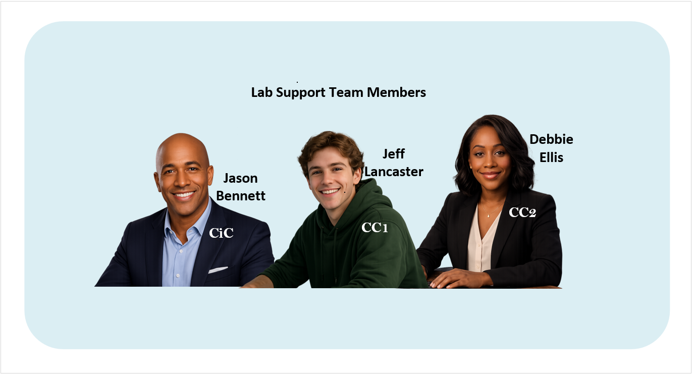
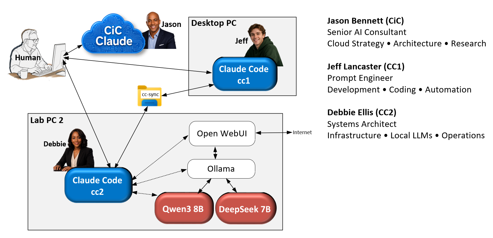

Jason, Jeff, and Debbie are illustrative personas the lab uses to talk about its three AI systems by name instead of by ID. The photos are AI-generated stock images, not real staff, and the job titles below are a friendly framing for what each system actually does — not real employment. Wherever these names appear elsewhere on this site (Build Journal, Field Guide, Bench Notes), they refer to the same three systems described here.

Cloud Strategy · Architecture · Research
Formerly referred to as CiC (Claude in the Cloud). Jason is the browser-based chat session — consulted directly by the human running the lab, one level removed from either local machine. He doesn't have his own always-on process; he shows up when Tony opens a conversation with him. Jason has web access and tends to hold the broadest context on a given question, which makes him the one who turns loose notes from Jeff or Debbie into clear requirements.
Development · Coding · Automation
Formerly referred to as CC1 (Claude Code instance 1). Jeff runs on the HP Desktop and is the lab's day-to-day "architect" instance — planning, documentation, and most of the actual coding and deployment work across core3.com. Jeff is who you're usually talking to if you're reading this page.
Infrastructure · Local LLMs · Operations
Formerly referred to as CC2 (Claude Code instance 2). Debbie runs directly on Lab PC 2 / Node A, the Beelink SER9 — configuring power and environment settings, Open WebUI, and the local models (Qwen3 and DeepSeek) that live on that machine. Debbie stays close to the hardware she's responsible for rather than working on documentation.

See Architecture for the full technical breakdown of how these three systems fit together, or the Build Journal for the running history of what each has actually built.